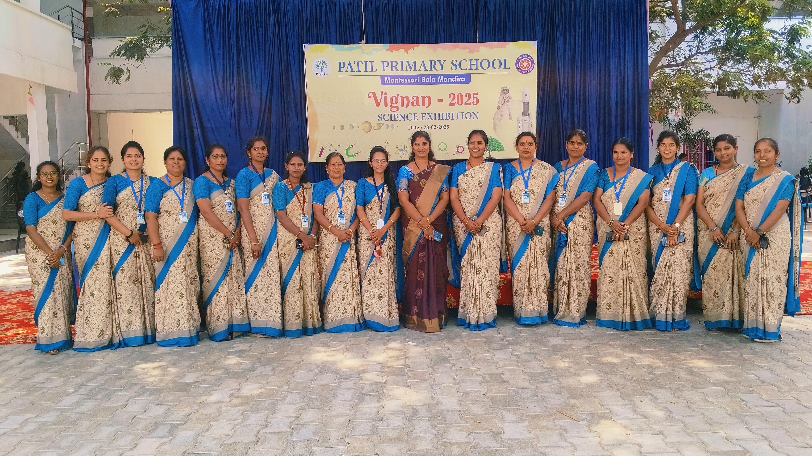

Our Faculty
Meet our dedicated and experienced teaching staff who are committed to providing quality education and nurturing every child's potential.
- All teachers are highly qualified and passionate about early childhood and primary education.
- Regular training and professional development ensure our faculty stays updated with the latest teaching methods.
- Teachers focus on individual attention, nurturing each child's unique strengths and learning style.
- Proven track record of academic excellence and holistic development.
- Open communication with parents to track and support student progress.
- Caring, approachable, and supportive staff create a safe and happy learning environment.
